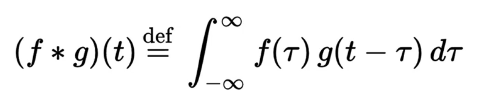
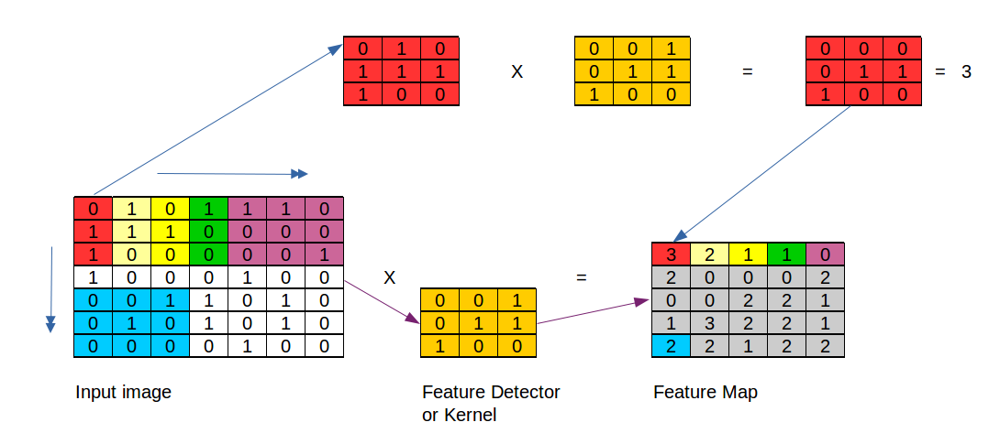
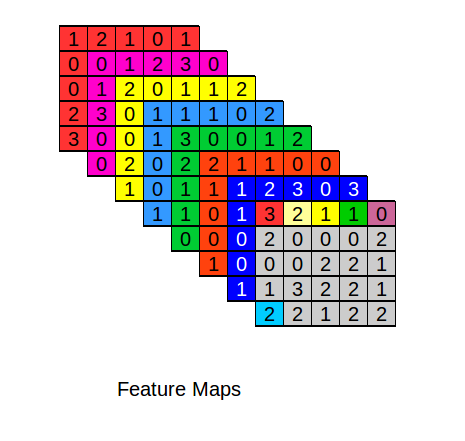
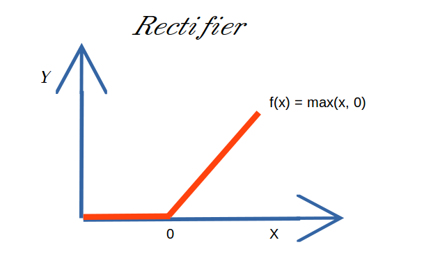
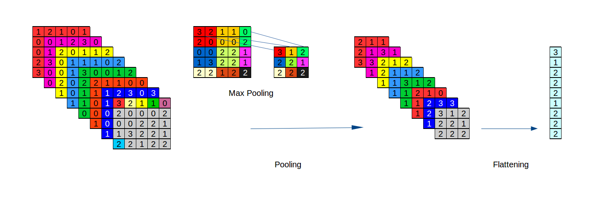
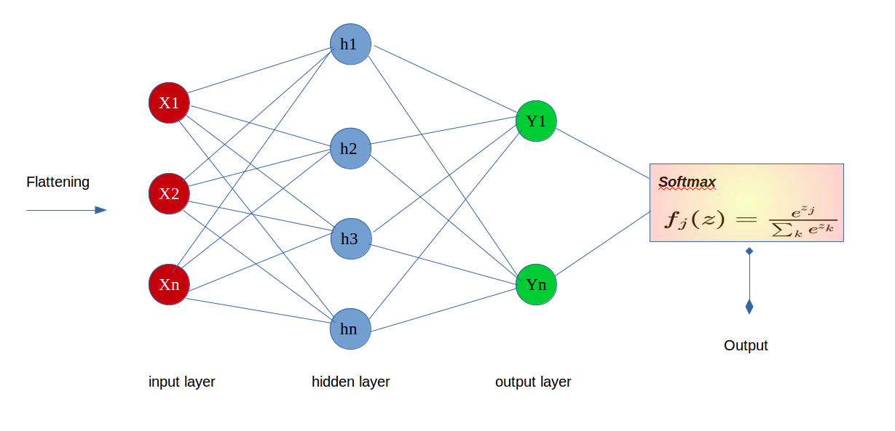

The Convolutional Neural Network is a tools of Deep Learning and it's used for classification of the object inserted into the image. La Convolution Neural Network is composed of the followings phases: Convolution, Pooling, Flattening and Full Connection.
The first, the convolution, is used for minimize the dimension of the image and for higher the process.
The matemathical formula is the following:

At first, you take the matrix of input image and some matrix of 3x3 (5x5 or 7x7 with other methods). This matrix is called Feature Detector or Kernel and is used for reduce dimension of image in bytes. For example in the below image,
we extract into the input image matrix a mini matrix of 3x3 element, which we multiply with the element of the Feature Detector matrix. Then, in this new matrix, we must sum the its values and put the result into the relative cell of the
Feature Map. The matrixs of 3x3 must be extrapolated from input matrix from left to right and then from high to low.

Run this process for any the Feature Map to create. I remember you that it must be numerous to have a lot of layer inserted into the Neural Network. So, there are some different Feature Detector used for remove some features at the insert image. For example,
I can insert a Feature Detector for remove the color. In the image below there is the scheme of Features Maps create.


To have a non Linear representation, we must use an activation function for the Deep Learning. Most function used is the Rectfier, which is called ReLU Rectified Linear Unit. Obviously, There are other activation function, as the Sigmoid Function, or
variants of the ReLU, as the Noisy ReLUs or the Leaky ReLUs.
Now we analizing the Pooling phase, which takes the Features Maps just created and, by the Max Pooling Method, we creating the Pooled Features Maps.
This method extracts into the Feature Map some matrix 2x2 and, from theese is taken
the max value, inserting then it into the Pooled Featured Map.
Into the below scheme, you can see in different colors the extract matrixs and the relative results.
In the Pooling phase we obtain the Pooled Features Map, in which we reducing yet data dimentions that are representative of image.
Then we have the Flattening phase, in which for every we create a vector where we insert the values present into the map. This vectors are the input layer.

The last phase is the Full Connection where the vectors are inserted into the our Neural Network with the hidden layer.
The Neural Network
return us the n output(y1, y2, yn) and, throught the Softmax Function, the y output with the greater probabily will be the final result.
In the following image, there is the scheme of the process just described and the Softmax Function
formula.

La Convolutional Neural Network è un metodo che viene utilizzato principalmente per classificare gli oggetti o le lettere inserite nelle immagini. La Convolution Neural Network è composta da diverse fasi : Convolution, Pooling, Flattening and Full Connection.
La prima fase la convolution si usa per ridurre le dimensioni delle immagini per occupare minor spazio e rendere piu veloce il procedimento.
La formula matematica è la seguente:
Si prende la matrice che rappresenta l'immagine e si prendono alcune matrici 3x3 (nel nostro caso mentre
altri prendono matrici anche 5x5 o 7x7). Queste matrici si chiamono Feature Detector o Kernel e si usano per ridurre le dimensioni delle immagini. Come nell'immagine sottostante, si prende all'interno della matrice input immagine una mini
matrice 3x3 e la si moltiplica per la matrice 3x3 Feature Detector. Poi nella matrice così creata si fa la somma dei valori ed il risultato si inserisce come elemento nella relativa posizione nella Feature Map. Le matrici 3x3 vanno estrapolate
dalla input image da sinistra a destra e poi dall'alto in basso.
Questo procedimento si ripete per ogni Feature Map da creare, ricordo che devono essere molte per avere diversi layer da inserire nel Neural Network. Quindi devo avere diverse Feature Detector ognuna delle quali si usa per eliminare
delle caratteristiche alle immagini. Ad esempio, posso utilizzare un Feature Detector per eliminare il colore. Sotto mostro lo schema delle Features Maps create di cui poi estrapoleremo i nostri layer.
Per passare ad un ambiente non lineare, bisogna utilizzare una activation function nel Deep Learning. La più indicata è la Rectfier chiamata ReLU Rectified Linear Unit. Naturalmente ci sono altre activation function, come la Sigmoid Function, o varianti
della stessa ReLU, come la Noisy ReLUs o la Leaky ReLUs.
Ora analiziamo la fase di Pooling, in cui si prendono le Features Maps appena create e, tramite il metodo Max Pooling, creiamo le Pooled Features Map.
Il metodo consiste nell'estrapolare nelle Feature Map delle matrici 2x2 e, da quest'ultime, si prende il valore massimo e lo si inserisce nella Pooled Featured Map.
Nello schema sottostante, si possono notare in diversi colori
le diverse matrici acquisite ed i relativi risultati.
Nella fase di Pooling otteniamo la Pooled Featured Map, in cui riduciamo ancora le dimensioni dei dati che rappresentano l'immagine.
La fase successiva è la Flattening in cui
per ogni Pooled Features Map si crea un vettore in cui inserire i valori presenti nella map. I vettori creati saranno gli input layer.
L'ultima fase è la full connection in cui i vettori creati in precedenza vengono inseriti nel nostro Neural Network insieme agli hidden layer.
Il Neural Network ci restituirà n output(y1, y2, yn) e, tramite la funzione Softmax, l'output y con la maggiore probabilità sarà il nostro risultato finale.
Nell'immagine seguente, c'è lo schema del procedimento appena descritto e
la formula della funzione Softmax.